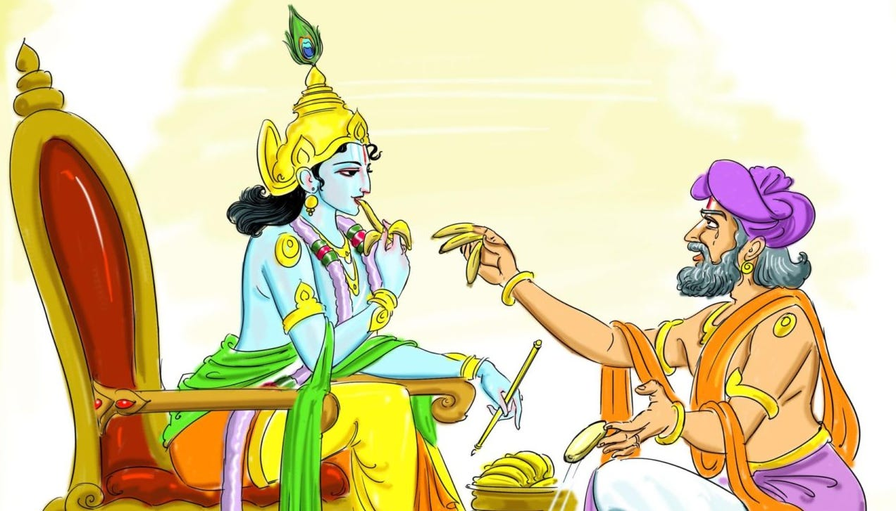
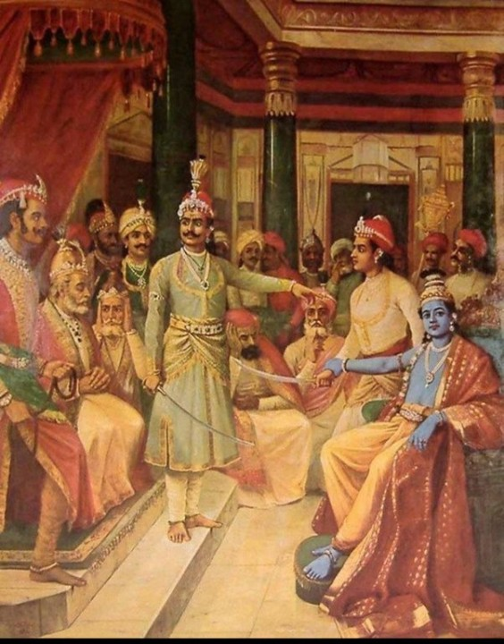
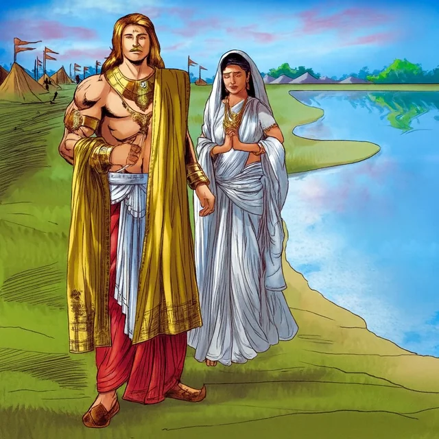

When Abhimanyu and Uttara’s wedding was over, Krishna requested Virata and Drupada to approach Dhritarashtra with the request to return the kingdom of the Pandavas. The Pandavas had, after all, gone through the penalties imposed on them by Duryodhana. Everyone agreed and Sanjaya, the royal priest of king Drupad, was sent as a messenger to visit Dhritarashtra. Dhritarashtra called Bheeshma, Vidur, and the other elders, to a meeting with Duryodhana, and his supporters. Duryodhana flatly refused to give even a pinch of land to the Pandavas. His close friends, like Karna. overwhelmingly supported him. They declared that they would be willing to go to war against the Pandavas in order to keep the kingdom. Grandfather Bheeshma was sorry to witness such hatred between the cousins, his grandchildren. He could sense the oncoming peril for the Kauravas. Dhritarashtra could not help. He was blind and his eldest son Duryodhana ruled the kingdom. Duryodhana was adamant to be the sole ruler of the Kaurava Empire and did not want to share the kingdom with the Pandavas. Sanjay witnessed the arguments in the court of Dhritarashtra. Dhritarashtra finally gave in and regretfully informed Sanjay that his son Duryodhan was unwilling to share the kingdom with the Pandavas. Yudhishthira was a righteous person. He wished to avoid a war, especially against his own relatives. He was willing to give up some of the kingdom that originally belonged to him. He requested Krishna to convey his feelings to the Kauravas as the last resort. Krishna knew that war was inevitable yet he went to Duryodhana to persuade. Reaching Hastinapur, Krishna stayed with Vidur. Kunti, mother of the Pandavas, then staying with Vidur, expressed her concern that the war may kill the Pandavas, Krishna consoled her.


“Mother Kunti, your sons are invincible. Whatever may be the strength of the Kauravas, the Pandavas will finally come out victorious. I am here to make every attempt to avoid the blood shed which will destroy the entire Kaurava dynasty.” Next day Krishna was given a rousing welcome in the court of Dhritarashtra. All the elders were on Krishna's side and requested Duryodhana to reconsider his decision and share the kingdom with the Pandavas in a peaceful manner. Duryodhana was unwilling to listen to logic. He sternly replied, “ Krishna! You are unduly partial to the Pandavas. Be it known once and for all that the only way for the Pandavas to win back their kingdom is through war.” Then in disgust Duryodhana left the court with Karna. People present in the court were gravely concerned about the consequences. Krishna returned from Hastinapur disappointed and delivered the message of war to Yudhishthira and Kunti’s blessing for the Pandavas. All hopes for a peaceful settlement were over and the Pandavas had no other resort than to declare war against the Kauravas. Krishna asked Yudishthira to remain on the path of justice, yet not to forego his rights, even if this may result in a war with the Kauravas. When Kunti saw that war was imminent, one day she approached Karna when he finished worshipping the sun god after his bath. Karna was the son of the sun god, Surya, born of Kunti, out of wed lock. This happened when Kunti tried out the mantra given by Durbasha before she was married to Pandu. As Kunti was unmarried, she had no choice but to discard Karna in the river. A charioteer picked him up and raised him to adulthood. This was a well kept secret. Karna was truly one of the Pandavas. Kunti finally told Karna the true story of his life.

Kunti requested Karna not to kill any of his brothers. Karna promised to spare all, except Arjuna. Before Kunti's departure, Karna broke down in his mother’s arm and sobbed with grief, “Mother, I have to fight Arjuna until death. This is my promise to get even with him for insulting me in public at the time when I challenged him to compete in archery. You will still have five sons, whosoever survives.” Kunti blessed Karna and left with fear and grief.